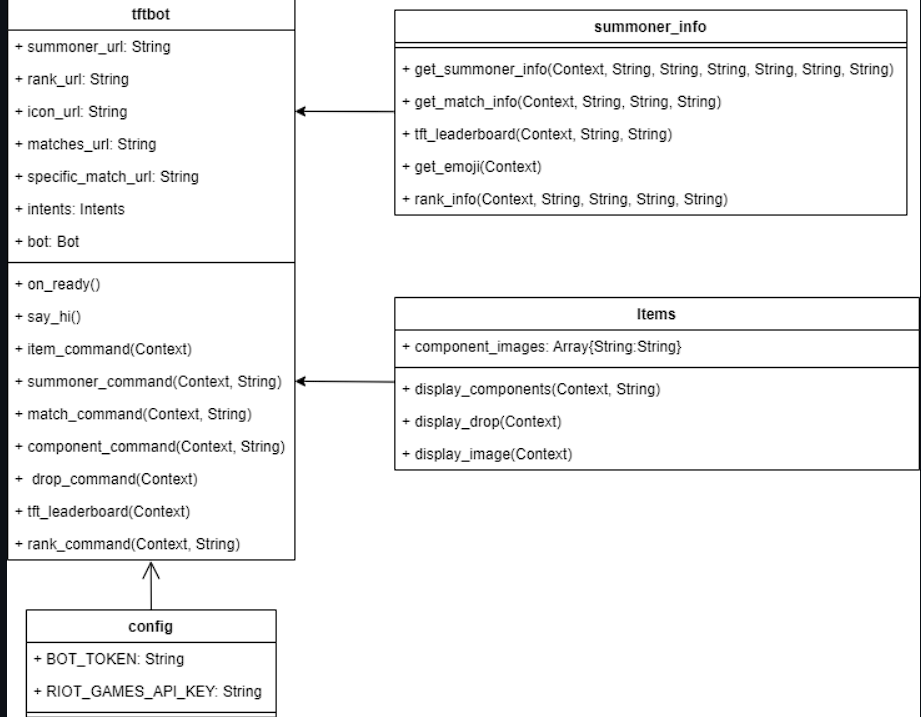

Project One
Designed and developed a Discord bot tailored for Teamfight Tactics (TFT) by Riot Games, a popular multiplayer strategy game.
• Engineered dynamic features to enable real-time retrieval of TFT game data through Riot Games’ APIs.
• Created specific bot commands such as Summoner, Item, Component, Match, Help, Droprates, and Rank to enhance user experience and provide comprehensive TFT game statistics.
Project Two

Developed an online typing racer game web application, ThrillTyper, offering various single-player and multiplayer modes including robot opponent mode, custom mode, dynamic mode, and online multiplayer.
• Designed and implemented user authentication, account management, dashboard, and leaderboard features.
• Integrated WebSocket technology for seamless real-time communication, enhancing multiplayer gameplay.